UDN
Search public documentation:
PhysXProfilingHomeJP
English Translation
中国翻译
한국어
Interested in the Unreal Engine?
Visit the Unreal Technology site.
Looking for jobs and company info?
Check out the Epic games site.
Questions about support via UDN?
Contact the UDN Staff
中国翻译
한국어
Interested in the Unreal Engine?
Visit the Unreal Technology site.
Looking for jobs and company info?
Check out the Epic games site.
Questions about support via UDN?
Contact the UDN Staff
UE3 ホーム > パフォーマンス、プロファイリング、最適化 > PhysX 物理シミュレーションのプロファイリング
PhysX 物理シミュレーションのプロファイリング
概要
STAT コマンド
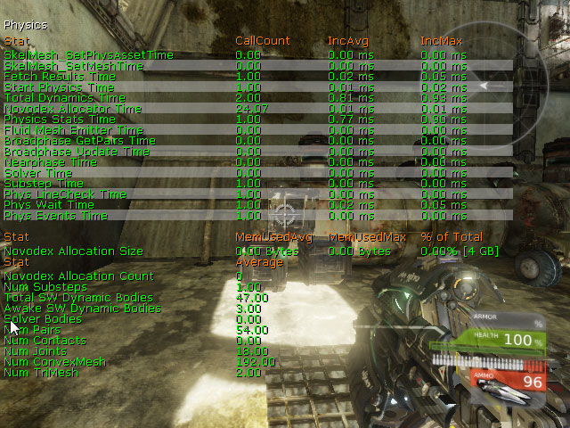
STAT PHYSICS (物理)
STAT PHYSICS コマンドによって、PhysX 物理エンジンに関する統計情報を表示することができます。
- Novodex Allocator Time (Novodex アロケータ 時間) - メモリを PhysX に割り当てます。
- Physics Stats Time (物理 統計 時間) - 物理システムのための統計情報をキャプチャします。
- Fluid Mesh Emitter Time (流体 メッシュ エミッタ 時間) -
- Broadphase GetPairs Time (ブロードフェーズ GetPairs 時間) -
- Broadphase Update Time (ブロードフェーズ 更新 時間)-
- Nearphase Time (ナローフェーズ 時間) -
- Solver Time (ソルバー 時間) -
- Substep Time (サブステップ 時間) - 平均サブステップ時間。
- Phys LineCheck Time (物理 ラインチェック 時間) -
- Phys Wait Time (物理 待機 時間) -
- Phys Events Time (物理 イベント 時間) -
- Fetch Results (結果の取得) -
- Start Physics Time (開始 物理 時間) -
- Total Dynamics Time (合計 ダイナミックス 時間) -
- Novodex Allocation Size (Novodex 割り当て サイズ) - PhysX に割り当てられたメモリの総計です。
- Novodex Allocation Count (Novodex 割り当て 数) - PhysX に対する総メモリ割り当て数です。
- Num Substeps (数 サブステップ) - タイムステップが分割されるサブステップ数です。
- Total SW Dynamic Bodies (合計 SW 動的 ボディ) - 現在のシミュレーションステップについて、シーン内に存在している動的アクタの数です。
- Awake SW Dynamic Bodies (覚醒状態 SW 動的 ボディ) - 休眠状態のグループ (island) に入っていない動的なアクタの数です。
- Solver Bodies (ソルバー ボディ) - 現在のステップに存在しているソルバーのボディの数です。(すなわち、コンストレイントを受けているボディの数です)。2.6. ではサポートされていません。
- Num Pairs (数 ペア) - 現在のシミュレーションステップについてシーンに存在する図形ペアの数です。
- Num Contacts (数 接触) - 現在のシミュレーションステップについてシーン内に存在している接触の数です。2.6. ではサポートされていません。
- Num Joints (数 ジョイント) - シーン内に存在しているジョイントの数です。なお、この数には、シーン内のすべての「死んでいるジョイント」も含まれます。(NxScene.releaseActor 参照)。
- Num ConvexMesh (数 凸型メッシュ) - シーン内の PhysX 凸型メッシュの総数です。
- num TriMesh (数 トライアングルメッシュ) - シーン内の PhysX トライアングルメッシュの総数です。
STAT PHYSICSCLOTH (物理クロス)
STAT PHYSICSCLOTH コマンドによって、PhysX クロス (布地) シミュレーションに関するデータを表示することができます。
- Total Cloths (合計 クロス) - クロス シミュレーションの合計です。
- Active Cloths (アクティブ クロス) - アクティブなクロス シミュレーションです。
- Active Cloth Vertices (アクティブ クロス 頂点) - アクティブなクロス シミュレーションにおいてシミュレートされている頂点の数です。
- Total Cloth Vertices (総数 クロス 頂点) - すべてのクロス シミュレーションにおけるクロス頂点の合計です。
- Active Attached Cloth Vertices (アクティブ 付属 クロス 頂点) - アクティブなクロス シミュレーションにおいて付属している頂点の数です。
- Total Attached Cloth Vertices (合計 付属 クロス 頂点) - すべてのクロス シミュレーションにおいて付属している頂点の合計です。
STAT PHYSICSFIELDS (物理力場)
STAT PHYSICSFIELDS コマンドによって、PhysX 力場に関するデータを表示することができます。
- CylindricalForceFieldTick (円柱状 力場 ティック) - 円柱状力場のティックです。
- RadialForceFieldTick (放射状 力場 ティック) - 放射状力場のティックです。
STAT PHYSICSFLUID (物理流体)
STAT PHYSICSFLUID コマンドによって、PhysX 流体エミッタに関するデータを表示することができます。
- PhysXEmitterVertical Tick Time (PhysX 流体エミッタ 垂直 ティック 時間)-
- PhysXEmitterVertical Sync Time (PhysX 流体エミッタ 垂直 同期 時間)-
- Total Fluids (合計 流体) - PhysX 流体シミュレーションの合計です。
- Total Fluid Emitters (合計 流体 エミッタ) - PhysX 流体エミッタの合計です。
- Active Fluid Particles (アクティブ 流体 パーティクル) - アクティブなシミュレーションにおける流体パーティクルの数です。
- Total Fluid Particles (合計 流体パーティクル) - 流体パーティクルの合計です。
- Total Fluid Packets (合計 流体パケット) - 流体パケットの合計です。
インゲームでのビジュアル化
NXVIS コマンドを、多数あるオプションの 1 つとともに使用することによって、物理シミュレーションのさまざまなデータを直接ビューポート内にプレイ中に表示することができます。このため、完全にインタラクティブな操作によって、進行していることを正確に把握することができるようになります。
たとえば、 NXVIS COLLISION コマンドを使用することによって、物理コリジョン プリミティブを次のように表示することができます。
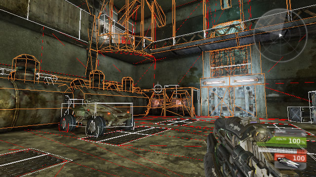
NXVIS コマンドに使用できるオプションの完全なリストとそれらの解説については、 コンソールコマンド の 物理コマンド セクションを参照してください。
PhysX ビジュアル デバッガー
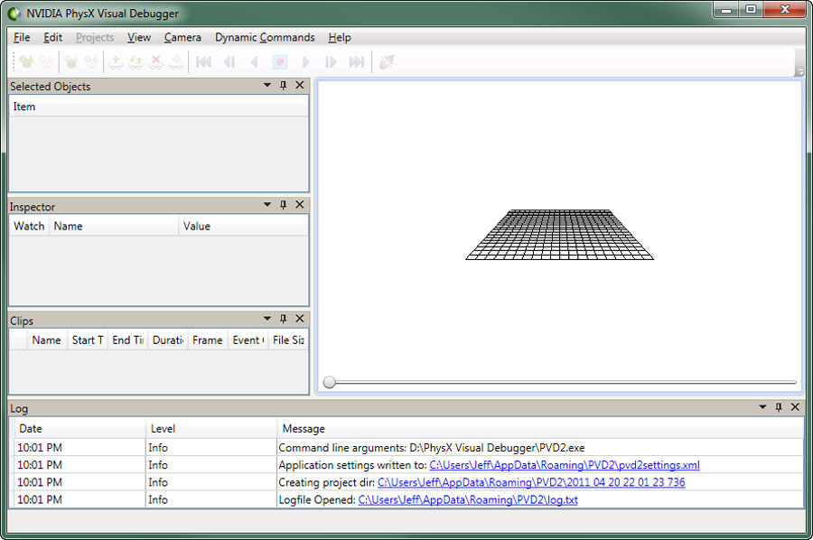
ダウンロードとインストール
PhysX ビジュアル デバッガーは、 nVidia のデベロッパサイト で入手することができます。つぎのように進んでください。- _Online Support (オンラインサポート) > Downloads (ダウンロード) > PhysX Tools (ツール) _
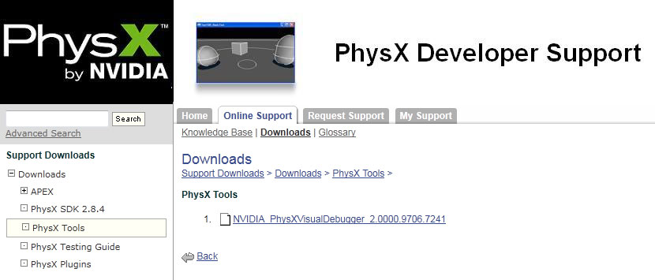
デバッギング セッションの実行
このアプリケーションが開いた状態で、つぎのコンソールコマンドを使用することによって、ゲームからデバッガーに接続することができます。nxvrd connect [ホストの IP アドレス]ホストの IP アドレスは、コンソールで実行する場合にのみ必要となります。(コンソールは、追加 ini の設定が必要です。PC のバージョンは同じ物理オブジェクトのデータをもつことになりますが、パフォーマンスはその限りではありません。では、この状態で開始しましょう)。PC で実行すると、ローカルに接続するようになります。これによって、後に調べることができる「クリップ」の録画が開始されることになります。録画が開始されると、最初に長いポーズがあり、その後に、実行時のインパクトが若干あります。クリップの録画を中止するには、つぎのようにタイプします。
nxvrd disconnectゲーム内で実行されているマップを表現するものによってシーンが満たされることになります。
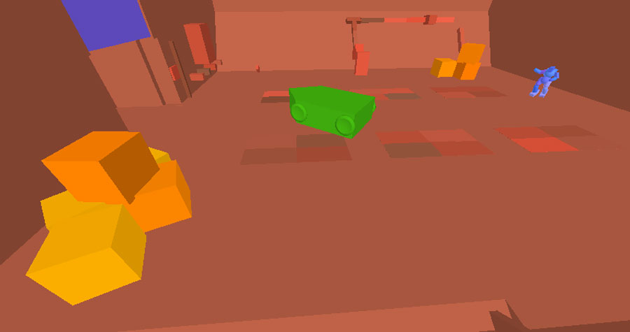
これで、PhysX データをデバッガーで分析することができるようになりました。(スライダーを使用してスクラブ再生することによって、さまざまなものを表示しなければならないことがあります)。パフォーマンスのスパイク (突出した部分) を端的に示すことができるものとしては、シーン内に存在するアクタの数があります。大きな上昇は避けられませんが、極めて大きな上昇は避けられます。ただし、実際は極めて大きな落ち込みがパフォーマンスにとってより問題となりますので、これには注意しなければなりません。オブジェクト数をウインドウに表示するには、つぎのようにします。- まだ表示されていない場合は、[ All Objects ](全オブジェクト) パネルまたはタブを開きます。
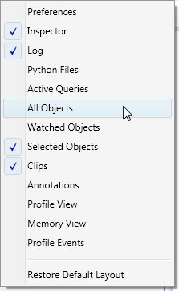
- リスト表示で NxScene の項目を展開し、Scene stats (シーン統計情報) を選択します。
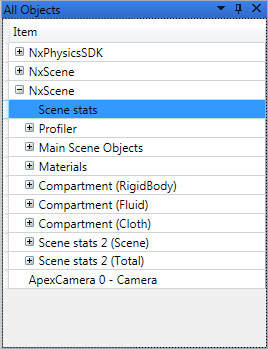
- 左側にある [Inspector] (インスペクター) ウインドウから Number of actors (アクタの数) を見つけます。
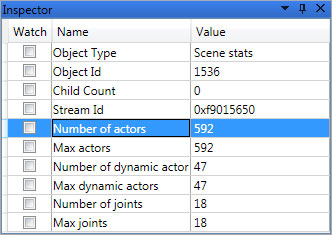
- Graph Number of actors for Scene stats (シーン統計情報のためのアクタ数をグラフ表示する) を選択します。
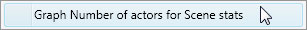
- これによって、右側に新たなタブが現れます。これは、シーン内にある物理アクタ数のタイムラインを示します。
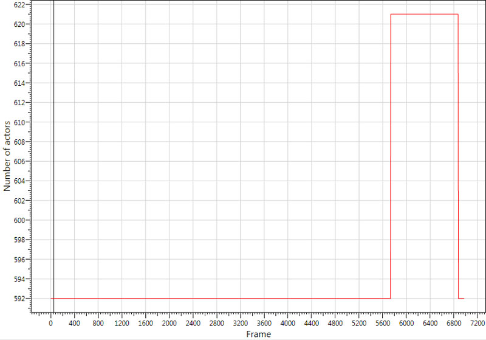
| コマンド | 説明 |
|---|---|
| Alt + Z | 選択されたアクタに焦点を当てます。 |
| Alt + T | 選択されたアクタを追跡します。 |
アノテーション (注釈)
アノテーションによって興味深いフレームやプロパティをマークすることができます。それによって、いつでもマークされた箇所まで飛んですばやく表示することができます。これは、PVD ファイルを (PhysX のサポートチームに) 回す場合に便利です。アノテーションをクリックするだけで、PVD はその興味深いフレームまで飛びます。例 : 「このフレームからボックスが貫き始める」 アノテーションを作成するには、つぎのようにします。- 興味を引くことが起きたフレームまで進み、 Ctrl + Alt + A を押します。 [ Create Annotation ] (アノテーションの作成) ダイアログボックスが現れます。
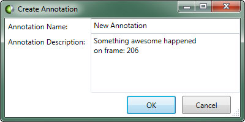
- 新たなアノテーションのための Name (名前) と Description (説明) を入力します。
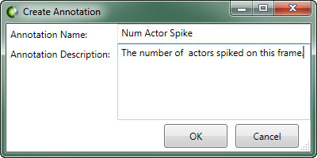
- ボタンをクリックして、アノテーションを作成します。 [ Annotations ] (アノテーション) パネル内に表示されるようになります。
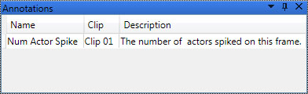
ユーザー設定
PhysX ビジュアル デバッガー内の [Preferences] (ユーザー設定) パネルによって、追加情報をビューポートで表示する方法について設定することができます。たとえば、ファイルの保存場所や、ビューポート ナビゲーションの機能方法など、他にも多数あります。 [_Preferences_ ] パネルは、[ View ] (ビュー) メニューから開くことができます。 キャプチャと再生 Capture & Playback (キャプチャと再生) という設定項目によって、データのキャプチャと表示を設定することができます。特に興味深い設定項目を以下にあげます。- Temp Directory (一時ディレクトリ) - 一時ファイルを作成および保存するディレクトリを指定することができます。
- Navigation Scheme (ナビゲーション スキーム) - ビューポートのナビゲーションを設定します。 Maya のスキームによって、アクタの選択がワンクリックで済むようになるため便利です。
- Contacts (接触) - コリジョン接触を表示します。
- Bounding Boxes (バウンディングボックス) - アクタのためのバウンディングボックスを表示します。
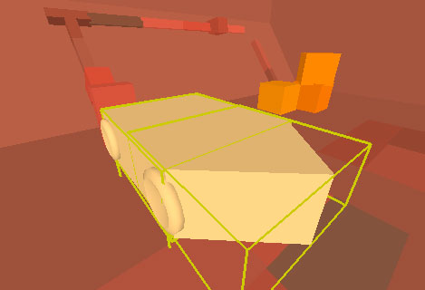
- Center of Mass (重心) - アクタの重心を表示します。
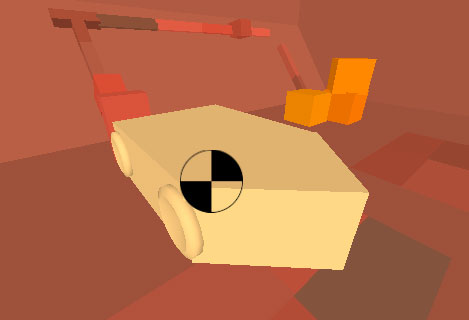
- Frames (フレーム) - 座標参照フレームを表示します。
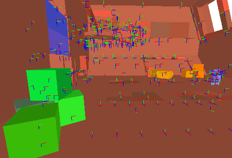
- Velocities (速度) - 動いているアクタの速度を表示します。
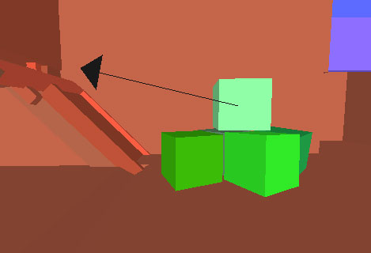
- Transparency (透過処理) - アクタを透明に描画します。
- Transparency Amount (透明度) - 透過処理を行う際、どの程度の透明度でアクタを描画するかを決定します。
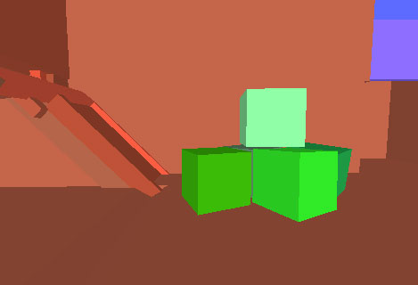
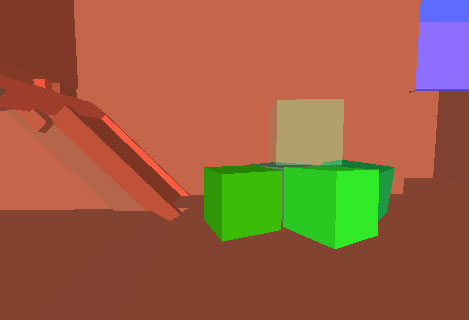
- Gizmo Scale (ギズモ スケール) - フレームや重心などを描くために使用されるギズモ (補助ツール) のサイズを決めます。
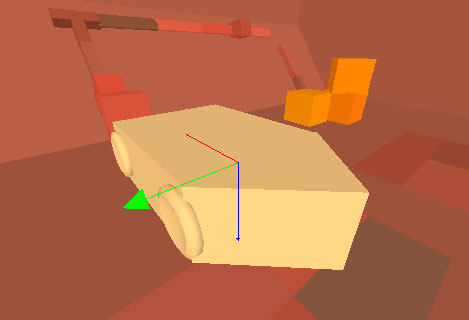
- Culling Far Distance (遠距離のカリング) - どのくらい離れてオブジェクトがビューポートで描画されるかを決めます。
- Culling Near Distance (近距離のカリング) - どのくらい近くでオブジェクトがビューポートで描画されるかを決めます。
- Camera Speed Scale (カメラスピードのスケール) - ビューポートをナビゲートしているときに動くカメラの速度を決めます。
- Orientation (方向) - 方向を左手系 / 右手系にセットします。
- Up Axis (上方軸) - ビューポート内でどの軸が上方軸として使用されるかを決めます。